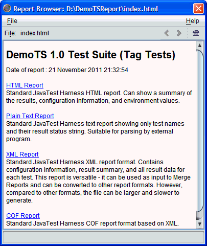

To display reports in the report browser:
To display reports in the report browser:You can use the Report browser or a web browser to display harness reports.
To display reports in the report browser:
Choose Report > Open Report from the menu bar.
The harness opens a file chooser dialog box for you to specify a report directory. When you specify a report directory, the harness opens the Report Browser.

Choose the report format from the directory listing.
If you choose the HTML format version of the reports, a second directory listing is displayed. On the toolbar, you can use the report browser's back button (<) to return to the initial report page. You can also click the file name showing on the toolbar to open a dropdown of recently visited files and directories.
If you choose the text format version of the report, the browser
displays a summary.txt hyperlink to the summary page. The summary
page provides a text list of tests that were run and their test result status.
If you choose the XML format version of the report, the browser
displays a report.xml hyperlink to the XML report page. The
XML Report page provides a report of the configuration values used to run
the tests, the tests that were run, and their test result status.
This output is for automated processing purposes. It is not designed for human readability.
To see a list of the HTML reports click the Report directory hypertext link.
Usually you access the report files using the links in the top-level HTML report. You can also use the hyperlinks within report.html to display the detailed report files in the report browser.
The following table describes the contents of the Report Browser.
| Component | Description |
|---|---|
| Menu bar |
The menu bar contains a File and a Help menu.
|
| tool bar |
The tool bar contains a File field and three navigation buttons. The File field displays the name of the current report and provides a drop-down list of reports previously opened in the browser. As reports are opened, the harness adds their names to the drop-down list enabling you to navigate to any previously displayed report. Returns to the previously displayed report page. Opens the next report page that was displayed.
Returns to the |
| Contents area | The Report Browser displays the report file contents in the area below the tool bar. The Report Browser displays text files as well as HTML files. For HTML files, you can use hyperlinks in the report to display additional related reports. |
See Keyboard access for a description of how the keyboard can be used to navigate the Report Browser.
The following table lists and describes the HTML report files.
| Report Files | Description |
|---|---|
config.html |
Contains the configuration interview questions and your answers used for the test run. |
env.html |
Contains the name-value pairs derived from the configuration file that were used for the test run. |
error.html |
Contains a list of the tests that had errors and could not be run. |
error_gr.html |
Contains a list of the tests that had errors and could not be run, grouped by status. |
excluded.html |
Contains a list of the tests that were excluded from the test run. |
failed.html |
Contains a list of the tests that were executed during the test run but failed. |
failed_gr.html |
Contains a list of the tests that executed during the test run but failed. The test are grouped by status. |
notRun.html |
Contains a list of all tests that were not excluded from the test run but were not run. |
passed.html |
Contains a list of the tests that were executed during the test run and passed. |
passed_gr.html |
Contains a list of the tests that were executed during the test run and passed, organized by status. |
report.html |
Contains links to all of the HTML files and additional information. |
This report may also list known failure lists and exclude lists if they have been included in your configuration.
You can view the reports offline by opening the html files
in a web browser or opening the summary.txt report
in any text
editor.
The report.html file is the root file that links to the other
HTML reports. The summary.txt report
contains a list of all tests that were run, their test results, and their
status messages.
Copyright © 2002, 2011, Oracle and/or its affiliates. All rights reserved.